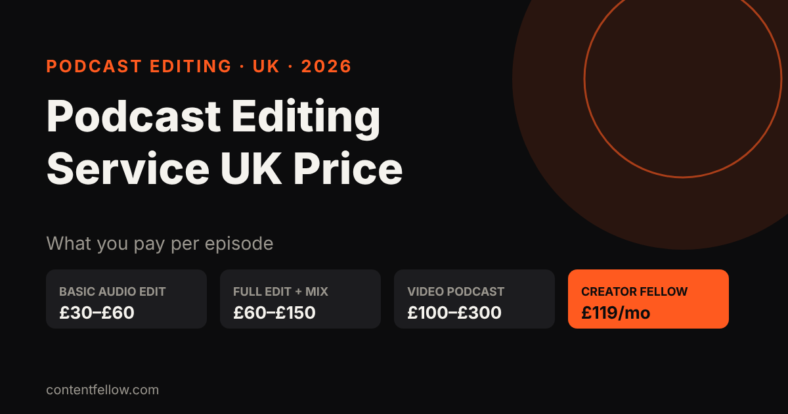
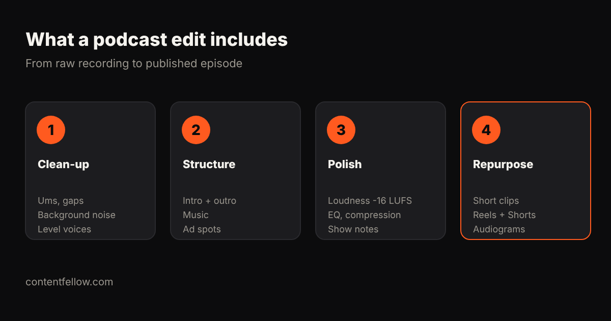

Podcast Editing Service UK Price: What It Costs in 2026
Podcast editing service UK price: how much per episode?
Quick answer: A podcast editing service in the UK typically costs £30–£60 per episode for a basic audio clean-up and £60–£150 for a full edit with music, mixing and show notes, while video podcasts cost £100–£300 per episode. ContentFellow's Creator Fellow includes one podcast edit (up to 60 minutes) plus 8 short videos and 1 motion graphics video for £119 a month. (Updated October 2026.)

TL;DR: Price depends on episode length, audio or video, and how much polish you want. If you also need short clips to promote each episode, a bundle is usually better value than paying for each piece.
UK podcast editing prices (2026)
| Service level | Typical UK price per episode | Includes |
|---|---|---|
| Basic audio edit | £30–£60 | Remove mistakes and long gaps, level voices |
| Full audio edit + mix | £60–£150 | Noise reduction, music, intro/outro, loudness, show notes |
| Video podcast edit | £100–£300 | Multi-camera cuts, captions, thumbnails |
| Agency production package | £300–£1,000+ | Recording, editing, publishing, promotion |
| Creator Fellow (ContentFellow) | £119 a month | 1 podcast edit up to 60 min + 8 short videos + 1 motion graphics video |
ContentFellow is not VAT registered, so the price shown is the price you pay.
What a good podcast edit includes

- Clean-up: ums, false starts, long pauses and background noise removed.
- Structure: intro, outro, music beds and ad spots in place.
- Polish: consistent loudness (around -16 LUFS for most platforms), EQ and compression.
- Repurpose: short vertical clips for Reels, TikTok and YouTube Shorts to promote the episode.
How to keep costs down
- Record each speaker on a separate track and use a decent USB microphone.
- Send a quick note of sections to cut.
- Batch episodes so the editor can keep a consistent sound.
- Get clips from the same edit rather than paying twice.
For more, see video editing costs in the UK and who can edit your Reels every month.
Frequently asked questions
How much does a podcast editing service cost in the UK?
Usually £30 to £60 per episode for a basic edit, £60 to £150 for a full edit and mix, and £100 to £300 for a video podcast.
Is there a monthly podcast editing service in the UK?
Yes. ContentFellow's Creator Fellow is £119 a month and includes one podcast edit up to 60 minutes, 8 short videos and a motion graphics video.
Do you edit video podcasts?
Yes. We can edit video podcasts and cut vertical clips for Reels, TikTok and Shorts.
How long does a podcast edit take?
A typical episode is returned within a few working days of receiving the files.
Can I try it first?
Yes. The Creator Fellow starts with 3 free videos, no card needed.
See all services and prices → · More quick answers on our answers page. Want a site you own? See development packages and website care plans.
Sources: ContentFellow plans and prices from contentfellow.com/pricing/ (October 2026); UK market ranges are typical quotes from UK freelancer marketplaces and agency price pages checked October 2026. Last updated 19 October 2026.